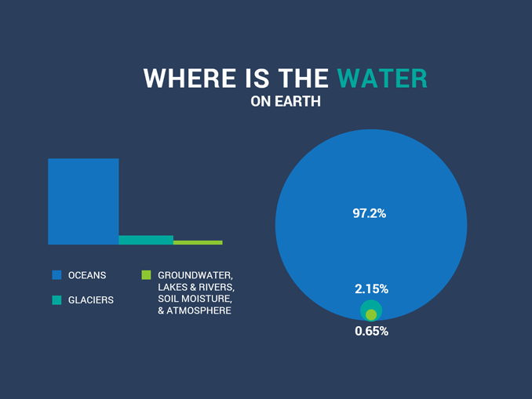

Of all of the water on Earth, 97% is saltwater, leaving a mere 3% as freshwater, approximately 1% of which is readily available for our use.
Water is constantly moving on the Earth between the atmosphere, ocean, rivers and streams, snowpacks and ice sheets, and underground.
Water availability, both as surface water and groundwater, is essential for agriculture, human consumption, industry, and energy generation.
Fresh water is available as surface water such as lakes, rivers, reservoirs and groundwater found underground in rock or soil layers, and accessed through wells or natural springs.
Earth is also known as Blue planet due to the availability of water in it.
Climate, land use, local geology, and water quality all affect the availability of fresh water resources in addition to the direct demands people place on them.
The world’s population is becoming more and more reliant on this precious resource for power, irrigation, industrial practices, and daily consumption.
Fresh water is therefore, the most precious substance on earth.
Water can neither be added nor subtracted from the earth. Its total volume remains constant. Its abundance only seems to vary because it is in constant motion, cycling through the oceans, the air, the land and back again, through the processes of evaporation, precipitation and run-off known as Water Cycle.